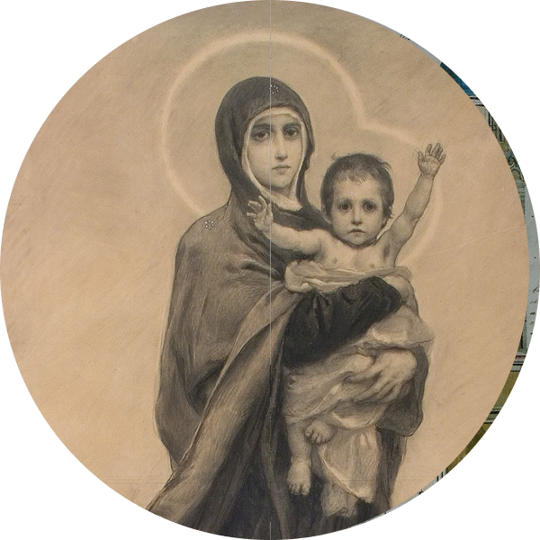
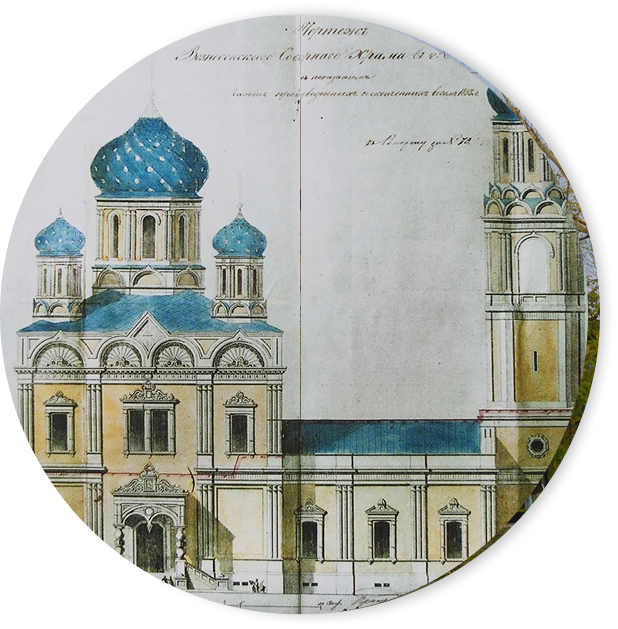
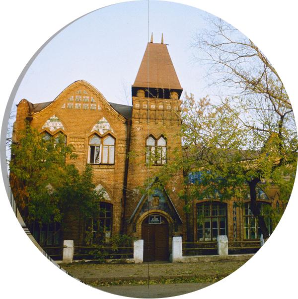
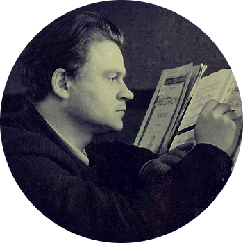
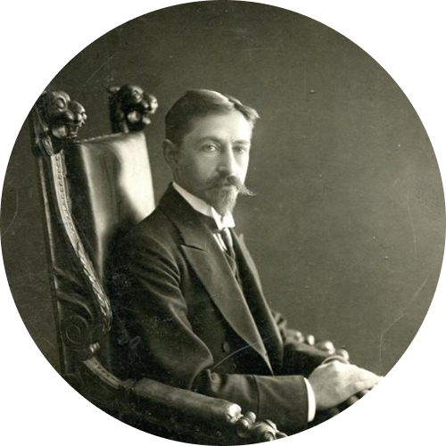
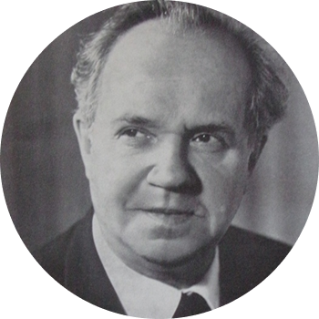

о городе
История
Елец, впервые упомянутый в 1146 году, — один из древнейших городов Черноземья. Веками он был неприступной крепостью на южных рубежах Руси, о которую разбивались волны кочевых набегов. Этот город-воин сохранил уникальный дух истории, запечатлённый в его архитектуре и традициях.
Наиболее вероятно, что название города происходит от старославянского слова «елец», означавшего лесной овраг, поросший елями, или еловую рощу. Оно точно отражало характер местности, где на крутом берегу Быстрой Сосны среди оврагов и лесов была основана первая крепость.



События
Отступление Тамерлана
Разорив Елец, Тамерлан отступил, увидев во сне Богородицу. Это спасло Москву и оставило в веках легенду о чудесном заступничестве.
Вознесенский собор
Архитектор Константин Тон создал проект великого собора, строившегося 44 года. Он стал на века архитектурной доминантой и духовным сердцем города.
Купеческий Елец
Табачный магнат и меценат Николай Заусайлов превратил Елец XIX века в современный промышленный город, построив больницы, театр и железную дорогу.



Культура
Музыка Тихона Хренникова, уроженца Ельца, пропитана светлыми и жизнерадостными народными мотивами родного края. Его вдохновенные и мелодичные произведения, сочетающие классику и русскую песню, выросли из живых детских впечатлений.
Елец глубоко повлиял на лирическую прозу Ивана Бунина, став ключевым местом действия его романа «Жизнь Арсеньева». Память писателя чтут на межрегиональном культурно-просветительском фестивале «Антоновские яблоки», посвящённом его творческому наследию.
Творчество советского художника-графика Николая Жукова отчасти сформировано яркими елецкими впечатлениями юности. Острота художественного наблюдения, отточенная здесь, помогла ему в создании знаменитых выразительных фронтовых зарисовок.
Традиции
Воинское служение
Столетиями Елец был городом-крепостью, защищавшим южные рубежи Руси от набегов. Эта традиция закрепила в характере горожан стойкость и мужество, проявленные во время похода Тамерлана на Русь и в Елецкой наступательной операции в декабре 1941 года.
Кружевоплетение
Елецкое коклюшечное кружево — визитная карточка города с XIX века. Женщины плели изящные узоры, а звуки коклюшек были обычным фоном городских улиц. Промысел сохранён на фабрике «Елецкие кружева» и в работе мастеров.
Купеческая предприимчивость
В XIX веке Елец стал крупным центром торговли (хлеб, табак, кожа) и промышленности. Деловая хватка и меценатство купцов (Заусайловы, Черномашенцевы) сформировали архитектурный облик города с его «красными рядами», лавками и особняками.
Первый паровой элеватор в России
В 1888 году в Ельце был построен первый в стране паровой элеватор нового типа, который произвел революцию в хранении зерна. Это сооружение стало символом экономического расцвета города как крупнейшего хлеботоргового центра.